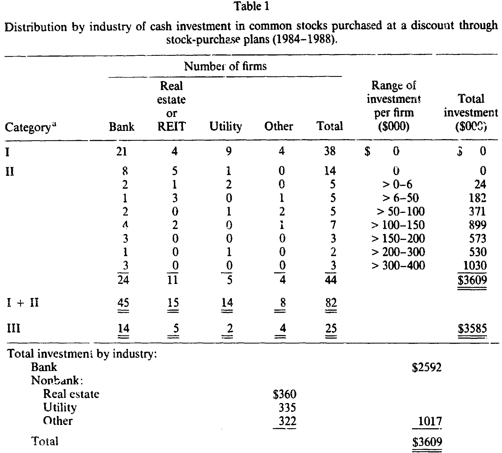
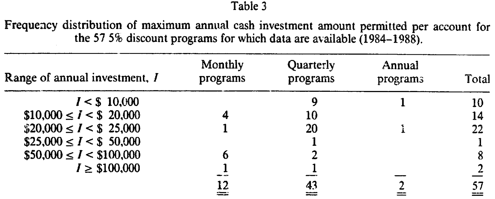
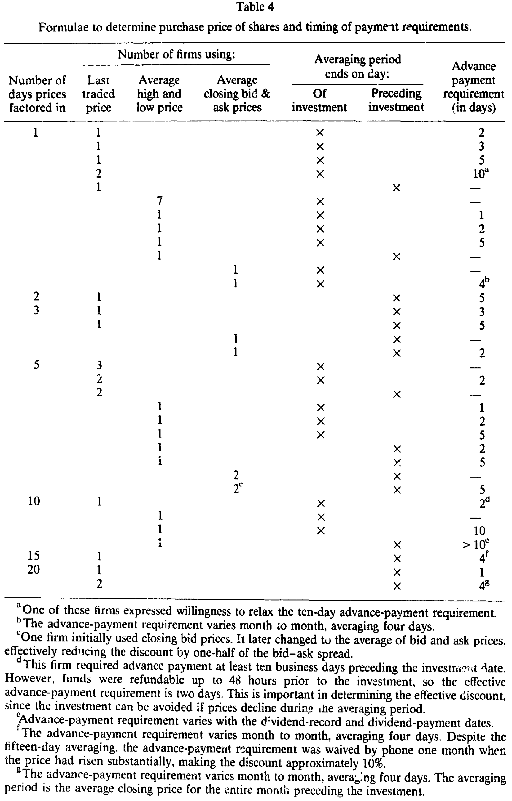
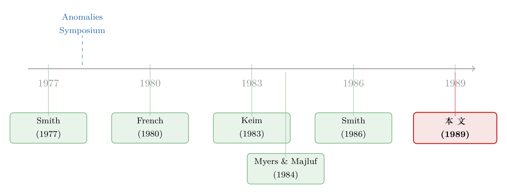

公司把承销外包给了股东，两位教授顺手赚走了 42 万美元
本文读的是 Scholes & Wolfson (1989, JFE)：很多公司允许股东以约 5.263% 的折扣、免佣金地认购新发行的股票——这其实是一种「去中心化的投资银行」，公司把承销这件事外包给了股东。两位作者用 20 万美元本金亲自下场，最终净赚 42.1 万美元。这笔利润既是对市场有效性的一记耳光，也提出了一个更尖锐的问题：既然钱就摆在那儿，为什么公司要花那么久才募够资本，又为什么那么多有资格的股东偏偏不来捡？
1 引言：街上那张二十美元，这次是真的
金融学的入门课上，老师都会讲一个关于 Fama 的段子：他和同事散步，旁人提醒他刚刚错过了一张躺在人行道上的二十美元钞票，他头也不回地答道——「胡说！要真有一张二十美元躺在那儿，早就被人捡走了。」这就是所谓的「Fama 命题」：在有效市场里，免费的午餐不可能存在，因为它一旦存在就会立刻被吃掉。
这个故事讲得多了，学生难免留下一个印象：创新与勤奋是不被奖赏的，因为市场早就替你想到了。可本文的两位作者——后来因期权定价拿了诺奖的 Scholes，和他的合作者 Wolfson——偏偏不信这个邪。他们没有像 French (1980)、Gibbons and Hess (1981)、Keim (1983) 那样，仅仅在数据里指出一个异象（周末效应、星期效应、一月小盘股效应）然后写篇论文了事；他们做了一件那个年代的学者很少做的事：掏出自己的真金白银，把这张二十美元捡了起来，然后告诉你它到底值多少钱。
（关于「异象到底该不该信、街上的钱该不该捡」，可参见《街上捡到一张百元大钞，你敢信它是真的吗？》。）
他们捡到的是什么呢？是一批公司提供的折扣股票认购计划 (discount stock-purchase plans)。规则简单到近乎荒唐：你只要持有该公司哪怕一股、并以自己的名义登记成「记名股东」，就有资格每隔一段时间寄一张支票过去，公司便会免佣金地按市价打个折扣（典型值是 5/95 = 5.263%）发给你新股；这些股票几周后就能在市场上原价卖掉。
拿 J.P. Morgan 来说：股东每月最多可按 5.263% 的折扣买入 $5,000 的股票。如果能立刻无成本卖出，每笔交易就是一笔 $263.16 的「稳赚」。两位作者说得很坦白：「我们其实更希望摩根每个月直接给我们寄一张 $263.16 的支票，省得我们还要寄支票、买股票、再卖出。」
最终的成绩单是这样的：投入约 $200,000，净赚 $421,000，其中 $163,800 是净折扣收入（所有毛折扣减去交易成本），$182,600 是这段时间股价整体上涨带来的投资回报，$74,600 是超出净折扣收入之外的「异常收益」。这笔钱已经扣掉了佣金、对冲损失和其他一切交易成本。而 90% 的活动，都集中在不到两年里完成。
接着，一个自然的问题是：这到底是怎么回事？为什么会有这么一张「真的」二十美元？
2 这不是异象，这是一门生意
要理解这篇论文，第一步是要把视角从「市场有效性」切换到「公司金融」。
作者给出的解释非常漂亮：这笔利润，本质上是对提供投资银行服务的报酬。当一家公司要增发新股募集资本时，传统做法是花钱请承销商（投行）来定价、包销、分销。而折扣认购计划干的是同一件事——只不过它把承销过程拆散、下放给了成千上万的股东。公司不再付一大笔承销费给华尔街，而是用一个折扣，把同样的钱付给愿意来认购、再把股票分销到二级市场去的散户。
换句话说，折扣不是「天上掉的馅饼」，而是公司主动支付的承销费。Scholes 和 Wolfson 不过是接下了这单「去中心化承销」的活儿，赚的是承销商本该赚的钱。
这个视角立刻把问题变得有趣起来。如果折扣真的等于承销成本，那它应该刚好补偿承销的麻烦，不多不少。可作者后来反思道：「事后看来，我们被付得太多了 (we were paid too much)。」BankAmerica 就是个绝佳的反例——它在不到两年里把折扣连降四次，一路降到 2%，同时大幅放宽了每月投资上限，结果照样募到了超过 $350 百万、平均折扣远低于 4% 的资本。这说明同样一桩承销，本可以用低得多的价格完成。
于是真正的张力出现了：这门生意明明利润惊人，为什么没有被瞬间套光？这正是全文反复要回答的那个核心。
3 折扣从哪儿来：一张制度的素描
要回答上面的问题，得先弄清这些计划长什么样。
作者在 1984–1988 年间识别出了 82 家提供折扣现金认购计划的公司。它们高度集中：74 家落在三个行业——银行 (45)、房地产（含 REIT，15) 与公用事业 (14)。在 $3.6 百万的总投资里，$2.6 百万投向了银行。银行的扎堆或许反映了它们在监管压力下、对「另一种募资方式」的试验。

Table 1
折扣的标准值是 5%：在有数据的 66 个计划里，57 个折扣为 5%。投资上限五花八门，但有规律——13 个计划按月设限、49 个按季、4 个按年；最常见的安排是「每季每账户 $5,000、5% 折扣」（20 个计划）。除 BankAmerica 外，每账户每年的认购上限通常封顶在 $120,000，最小的只有 $4,000。

Table 3
这里已经埋下了第一条线索：这些投资上限和「必须持有记名股票」的要求，并非偶然。它们恰恰是为了把机构和大户挡在门外——上限阻止了规模经济，而「股票必须登记在投资者本人名下、而非券商名下」这一条，则封死了券商替客户大规模自动化参与的可能。换句话说，公司似乎是在刻意限制竞争。先记住这一点，反转时我们会回到它。
4 真正关键的一步：那个被白送的期权
到目前为止，故事还只是「打折买、原价卖」，赚的是确定的 5.263%。但本文最精彩的洞察在于：这个折扣其实不止 5.263%，因为认购计划里还藏着一个免费赠送的期权。
关键在于「购买价怎么定」。绝大多数计划不是用某一天的价格，而是用一段时间（从 1 天到 20 天不等，最常见是 1 天和 5 天）的平均价来计算认购价。表 4 把各家公司在「取哪种价格、平均几天、平均期在哪天结束、款项要提前几天到账」上的五花八门做法列了个清楚。

Table 4
为什么这是个期权？因为很多计划并不要求你在平均期开始之前就把钱打过去。这意味着：你可以一边观察平均期内的股价走势，一边决定到底投不投。如果平均期里股价跌了，折扣会缩水甚至消失，你就大可以选择这个月不投；如果股价涨了，你的实际折扣反而被放大。这是一份白送的、可以择时行权的看涨期权。
作者用脚注里的一个例子把这一点讲透了。假设认购价是「投资日前 5 天收盘价均值的 95%」，而这 5 天的价格是 $25.00, $24.50, $25.00, $23.75, $23.00，均值为 $24.25，于是认购价 = 95% × $24.25 = $23.0375。但此刻最新成交价只有 $23.00——认购价竟然高于市价，「折扣」变成了 −0.16%。换句话说，若你机械地每月照投，碰上这种行情你是要亏的；而聪明的做法是：这个月干脆别投。
这个期权在「按季设限、按月可投」的计划里尤其值钱：你可以在每个季度的第一个月按兵不动，只有当应缴款日前一天的价格在平均期内涨过了某个阈值，才出手。靠着这套择时，作者把平均折扣从理论上的 5.263% 抬高了不少——好几次拿到 8%，有一次甚至做到了 10%。
到这里，「为什么折扣看起来太慷慨」就有了一半的答案：账面 5% 的折扣，叠加上这个被免费赠送的择时期权，真实的预期收益远不止 5%。
5 把账算给你看
现在我们把这门生意的数学摊开。最基础的那一层折扣是：
$$d = \frac{5}{95} = 5.263\%$$
注意这里的微妙之处：折扣是「市价的 5%」，但因为你的成本只是打完折后的那 95%，所以相对于你实际投出的钱，回报率是 5/95，而不是 5/100。
真正惊人的是资金的周转。如果每月投一笔、每笔在几周内就实现 5.263% 的回报、然后把本金回收再投，那么一年滚下来：
$$(1 + d)^{12} - 1 \approx 85\%$$
也就是说，复合年化收益超过了每月投资额的 85%。一张「打折券」，被资金周转放大成了近乎翻倍的年化。
当然，免费的午餐总要付点餐具钱。作者诚实地记下了对冲成本。为了防止持仓在卖出前下跌，他们用过三种保险：买入价内看跌期权（有效但贵，个股期权的买卖价差和佣金高，对冲一次轻易就花掉敞口的 1%）；以及融券做空（同样有效，但卖空所得拿不到手、还要押上现金或证券做抵押，很快就撞上了资本约束）。即便扣掉这些，作者说，他们确认了大约相当于投资额 4% 的无风险利润是可以稳稳拿到的。
这也解释了开头那张利润分解表：42.1 万里，16.38 万是净折扣收入（这才是「承销费」的本体），18.26 万是搭上了那段牛市的顺风车，7.46 万是超出折扣本身的异常收益。
6 反转：钱就在那儿，为什么没人捡？
最有意思的问题留到了最后：既然年化能有这个量级，为什么这张二十美元没有在一夜之间被捡光？为什么公司要花好几年才募够目标资本？
作者给出的线索，正是第 3 节我们记下的那条——这些计划被设计得很难大规模套利。每账户的投资上限、「股票必须记名」的硬性要求、券商无法替客户自动化参与，这些规则系统性地把机构和大户挡在门外，只留下零散的个人投资者一笔一笔地寄支票。两位作者甚至为此动用了「两个成年人加两个孩子、一户八个账户」的办法来扩大规模，还在多地银行开了信用额度。门槛之高，恰恰是套利之所以没被瞬间填平的原因。
于是答案是双向的。一方面，公司之所以「付得太多」，可能是因为愿意来干这活儿的人本就不够多——「要是更多投资者早点参与进来，发行公司多半会更早地下调折扣，我们的利润会被压薄，而其他股东募资的成本也会随之下降。」这正是后来发生的事：随着越来越多的套利者（包括作者自己）加入，许多公司陆续取消了折扣。另一方面，对那些不参与的合格股东来说，这套计划其实是不公平的——他们的股权被以折扣价稀释了，却没有分到任何好处。
这就回到了本文真正的贡献：它不只是记录了一个赚钱的异象，而是揭示了一种新的、去中心化的募资制度，并迫使我们去问它是否「公平」、是否「有效率」。一个便宜的募资方式（折扣认购）长期没被充分利用、而昂贵的传统承销却依然盛行——这本身就是一个谜。
这种「便宜的募资方式反而没人用」的悖论，并非折扣计划独有。配股 (rights offering) 也曾是教科书里更便宜的增发方式，却在美国市场近乎绝迹。两个谜放在一起看格外有味道，详见《便宜的方法没人用：一桩「配股悖论」与它背后的逆向选择》；而「公司为什么不在乎把钱留在桌上」这件事，也呼应了《盖茨的那场「不高兴」：新股为什么总把钱留在桌上》。）
7 文献脉络
把这篇论文放回它的时代，能看到两条线在此交汇。
第一条是市场有效性与异象这条线。1970 年代末的「异象研讨会」(Symposium, 1978) 之后，French (1980)、Gibbons and Hess (1981)、Keim (1983) 接连记录下周末效应、星期效应与一月小盘股效应，动摇了有效市场的地基。但这些论文有一个共同的软肋：它们只指出了异象，从不亲自交易它。本文正是冲着这个软肋来的——它「在异象清单上又添一笔，但带着一个反转」：不仅记录了利润机会，还公布了用自己的钱投资的结果。
第二条是资本募集与承销机制这条线。Smith (1977) 比较了配股与承销发行；Smith (1986) 系统梳理了投资银行与资本募集过程；与此同时，Myers and Majluf (1984) 用信息不对称解释了为什么增发常被市场解读为坏消息，Asquith and Mullins (1986) 则量化了增发的股价稀释效应。本文把折扣认购计划放进这条线里，提出了一个全新的位置：它是一种把承销下放给股东的去中心化投资银行。而 DRIP 这一具体制度的源头，可以追到 Light (1977) 记录的 1975 年 AT&T 首推折扣型股利再投资计划。

本文的独特之处，正在于它同时站在这两条线的交点上：用一个公司金融的制度创新，回答了一个市场有效性的经验难题。
评论与延伸（Q&A + 研究方向）
(a) 几个可能的疑问
Q：这 42.1 万里有 18.26 万只是「赶上了牛市」，那它还算「异常收益」吗？
不算，作者也没把它算进去。他们把利润明确拆成三块，市场上涨那
18.26万属于承担市场风险的正常回报。真正属于「免费午餐」的是16.38万的净折扣收入，外加7.46万的择时期权等带来的异常收益。把市场回报单列出来，恰恰说明作者在方法上是克制而诚实的。
Q：既然要对冲（买看跌、做空），凭什么说这是「无风险利润」？
因为对冲的目的正是把价格风险剥离掉，剩下的纯粹是折扣本身。作者明说扣除对冲成本后，约
4%的无风险利润可稳稳获得。代价是对冲很贵（个股期权对冲一次约花敞口的1%），且做空会占用抵押品、撞上资本约束——这也是利润没被无限放大的现实摩擦之一。
Q：折扣明明是 5%，为什么作者一直写 5.263%？
因为折扣是相对市价打的，而回报要相对你实际付出的成本算。你以市价的
95%买入，赚的是5/95 = 5.263%。这不是笔误，而是把「成本基数」摆正后的真实回报率。
Q：这套玩法对不参与的股东公平吗？
不公平。新股以折扣价发出，参与者占了便宜，而那些有资格却没参与的股东，其股权被稀释了却分文未得。作者把「是否公平」「是否有效率」明确列为开放问题——这也是全文从「赚钱故事」升华为「制度评述」的关键转折。
Q：这跟「打折的股利再投资」是一回事吗？
不完全是。本文赚钱的是可选现金认购那部分（有上限）。打折的股利再投资虽然额度不限，但收益薄得多：一只股息率
5%的股票即便给股利再投资打5%折扣，一年的「红利」也只有持仓的约0.25%。所以作者没在股利再投资上下功夫，火力都集中在现金认购的折扣与那个择时期权上。
Q：为什么作者敢说公司「付得太多」？
直接证据是 BankAmerica：它在两年内把折扣连降四次到
2%，还放宽上限，照样募到了超过$350百万、平均折扣远低于4%的资本。既然更低的折扣也能募到钱，那么5%的标准折扣对许多公司而言就是付多了。随着套利者涌入，许多公司随后也确实取消了折扣。
(b) 几个可能的研究问题与提案
1. 折扣认购计划的「股东补贴」究竟落到了谁头上？ - 【经济故事】折扣本质是一次财富从「不参与股东」向「参与股东」的转移。谁参与、谁不参与，可能与持股规模、是否机构、信息获取成本系统性相关。这是一道关于「制度性再分配」的实证题。 - 【可行性】中。需要 1980 年代这些计划的招股书与参与名册（难获取），以及股东结构数据；识别可借助计划条款（上限、记名要求）作为参与成本的外生变化。数据是主要瓶颈。
2. 把「去中心化承销」搬到今天的公司债市场。 - 【经济故事】本文的核心是「公司把承销外包给散户」。今天的公司债承销费率与折价（new-issue concession）依然可观，是否存在某种把分销下放、绕开传统承销商的机制能压低发行成本？这直接关系到信用市场的发行效率。 - 【可行性】中高。可用 TRACE 成交数据测量公司债的发行折价与二级市场首日回报（参见《新债上市第一笔成交，凭什么白赚 47 个基点？》），再对比有无中介下放安排的发行。识别需要找到承销结构的外生变化。
3. 「免费赠送的择时期权」值多少钱？ - 【经济故事】本文指出认购价的平均期 + 延后缴款，等于白送投资者一份看涨期权。可以用期权定价框架，把不同平均期长度、不同缴款时点对应的期权价值算出来，再回看公司是否在「无意识地」补贴了这部分。 - 【可行性】高。这是一道纯定价题：给定平均规则与历史波动率，用障碍/亚式期权方法即可估值，再与观测到的折扣对照，不依赖难获取的微观数据。
4. 折扣的逐步取消，是不是一场套利者驱动的「价格发现」？ - 【经济故事】作者预言：套利者越多，公司越早下调折扣。这等于说市场最终会把这块「过度补贴」磨平。可以把折扣随时间下降的速度，与套利活动的强度（如做空、参与人数）联系起来，检验这条机制。 - 【可行性】中。需要构建 1984–1990 年代各计划折扣条款的时间序列（手工从历年招股书采集），并找参与/套利强度的代理变量。工作量大但 doable。
5. 投资上限与「记名要求」作为限制套利的天然实验。 - 【经济故事】这些条款看似细枝末节，却系统性地把机构挡在门外，是「公司主动限制套利竞争」的罕见显性证据。条款的跨公司差异，可用来识别「套利受限程度」对折扣大小、募资速度的因果影响。 - 【可行性】中。条款本身是公开且可量化的（上限金额、是否要求记名），构成横截面变异；难点在于控制行业（银行扎堆）与同期市场状况的混淆。
评述者的判断
这篇论文的贡献，恰恰在于它「不像一篇论文」。它没有花哨的计量模型，却做了一件大多数异象研究不敢做的事——用作者自己的钱去验证利润是否真实存在，并诚实地记下每一笔佣金、对冲损失与资本约束。把折扣认购重新诠释为「去中心化投资银行」，是一个让人拍案的视角转换：它一举把一个看似属于「市场有效性」的异象，接回了「公司为什么、以何种成本募资」的公司金融主干道上。
对识别的担忧也是显而易见的。这本质上是一份临床式（clinical）的单一实验：样本就是作者自己的交易，样本期短（90% 集中在不到两年），又恰好叠加了一段上涨行情，外部有效性有限。我们无从知道，若换一段熊市、换一批不同的公司，那 4% 的「无风险利润」是否依然稳固。作者把市场回报单列、并坦承「付得太多」是事后判断，已经相当克制，但「为什么折扣定在 5%」这个公司侧的最优化问题，本文只是提出，并未真正解答。
我最想看到的后续，是把视角从「捡钱的人」转向「发钱的公司」：在一个能观测到公司募资目标、承销替代方案与股东结构的框架里，把折扣的高低内生地解出来——它到底是公司算不清的失误，还是为「限制套利、保证募资速度」而支付的理性代价？这道题，今天的信用市场或许比 1989 年的股票市场更适合回答。
参考文献
- Asquith, P. and D. Mullins, Jr. (1986). Equity issues and stock price dilution. Journal of Financial Economics 15, 61–89.
- Barclay, M. J. and C. W. Smith, Jr. (1988). Corporate payout policy: Cash dividends versus open market purchases. Journal of Financial Economics 22, 61–82.
- Bhagat, S., M. W. Marr, and G. R. Thompson (1985). The Rule 415 experiment: Equity markets. Journal of Finance 40, 1385–1401.
- Dubofsky, D. A. and L. Bierman (1988). The effects of dividend reinvestment plan announcements on equity value. Akron Business and Economic Review, 58–68.
- French, K. (1980). Stock returns and the weekend effect. Journal of Financial Economics 8, 55–69.
- Gibbons, M. and P. Hess (1981). Day of the week effects and asset returns. Journal of Business 54, 579–596.
- Keim, D. B. (1983). Size related anomalies and stock market seasonality: Further empirical evidence. Journal of Financial Economics 12, 13–32.
- Light, J. (1977). American Telephone and Telegraph Company – 1975. Harvard Business School case 9-277-016.
- Myers, S. and N. Majluf (1984). Corporate financing and investment decisions when firms have information that investors do not have. Journal of Financial Economics 13, 187–221.
- Scholes, M. S. and M. A. Wolfson (1989). Decentralized investment banking: The case of discount dividend-reinvestment and stock-purchase plans. Journal of Financial Economics 23, 7–35.
- Smith, C. (1977). Alternative methods for raising capital: Rights versus underwritten offerings. Journal of Financial Economics 5, 273–307.
- Smith, C. (1986). Investment banking and the capital acquisition process. Journal of Financial Economics 15, 3–29.